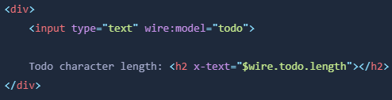
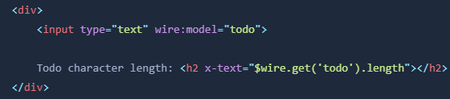
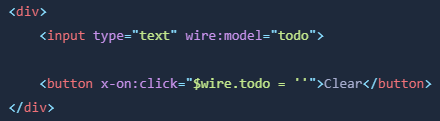

Debido a que las propiedades de Livewire también están disponibles en el navegador a través de JavaScript, puede acceder y manipular sus representaciones de JavaScript desde AlpineJS.
Alpine es una biblioteca JavaScript liviana que se incluye con Livewire. Alpine proporciona una forma de crear interacciones ligeras en sus componentes Livewire sin realizar viajes de ida y vuelta completos al servidor.
Internamente, el frontend de Livewire está construida sobre Alpine. De hecho, cada componente Livewire es en realidad un componente Alpine debajo del capó. Esto significa que puede utilizar Alpine libremente dentro de sus componentes Livewire.
El resto de esta página asume una familiaridad básica con Alpine. Si no está familiarizado con Alpine, consulte la documentación de Alpine.
Livewire expone un objeto mágico $wire a Alpine. Puede acceder al objeto $wire desde cualquier expresión Alpine dentro de su componente Livewire.
El objeto $wire puede tratarse como una versión JavaScript de su componente Livewire. Tiene las mismas propiedades y métodos que la versión PHP de su componente, pero también contiene algunos métodos dedicados para realizar funciones específicas en su plantilla.
Por ejemplo, podemos usar $wire para mostrar un recuento de caracteres en vivo del campo de entrada de tareas pendientes:
A medida que el usuario escribe en el campo, la longitud de caracteres de la tarea actual que se está escribiendo se mostrará y se actualizará en vivo en la página, todo sin enviar una solicitud de red al servidor.
Si lo prefieres, puedes usar el método .get() más explícito para lograr lo mismo:
De manera similar, puede manipular las propiedades de su componente Livewire en JavaScript usando $wire.
Por ejemplo, agreguemos un botón "Borrar" al componente TodoList para permitir al usuario restablecer el campo de entrada usando solo JavaScript:
Después de que el usuario haga clic en "Borrar", la entrada se restablecerá a una cadena vacía, sin enviar una solicitud de red al servidor.
En la solicitud posterior, el valor del lado del servidor de $todo se actualizará y sincronizará.
Si lo prefiere, también puede utilizar el método .set() más explícito para configurar las propiedades del lado del cliente. Sin embargo, debe tener en cuenta que el uso de .set() de forma predeterminada activa inmediatamente una solicitud de red y sincroniza el estado con el servidor. Si eso es lo que desea, entonces esta es una API excelente:
x-on:click="$wire.set('todo', '')"
Para actualizar la propiedad sin enviar una solicitud de red al servidor, puede pasar un tercer parámetro bool. Esto aplazará la solicitud de red y, en una solicitud posterior, el estado se sincronizará en el lado del servidor:
x-on:click="$wire.set('todo', '', false)"